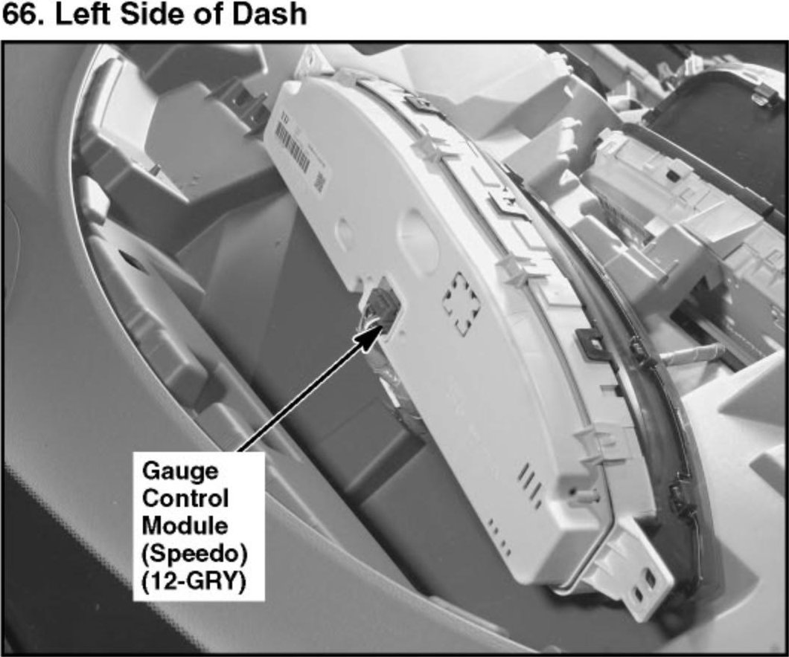
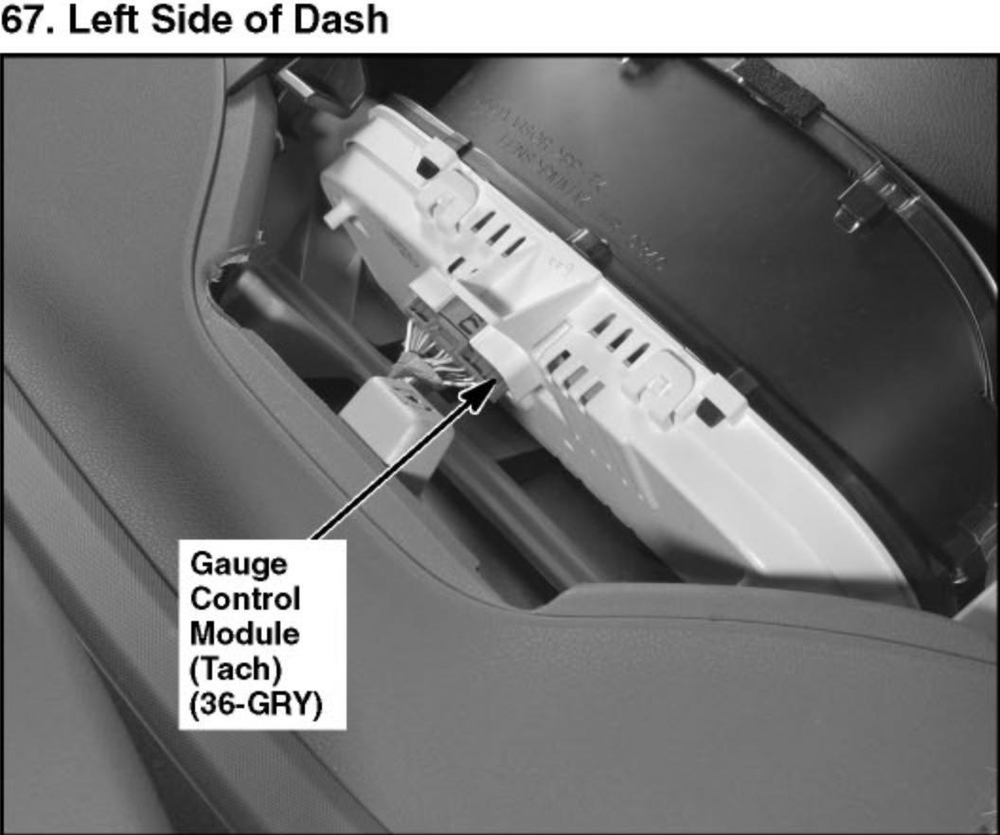
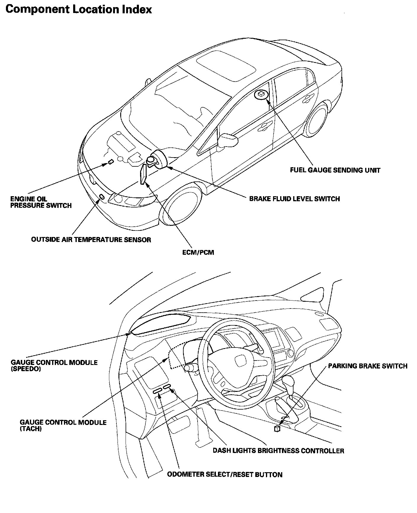

Operation CHARM
: Car repair manuals for everyone.
Home
>>
Honda
>>
2007
>>
Civic Si L4-2.0L
>>
Repair and Diagnosis
>>
Relays and Modules
>>
Relays and Modules - Instrument Panel
>>
Instrument Panel Control Module
>>
Locations
Instrument Panel Control Module: Locations
66. Left Side of Dash:

67. Left Side of Dash:

Gauges Component Location Index:

Relay And Control Unit Locations Dashboard: